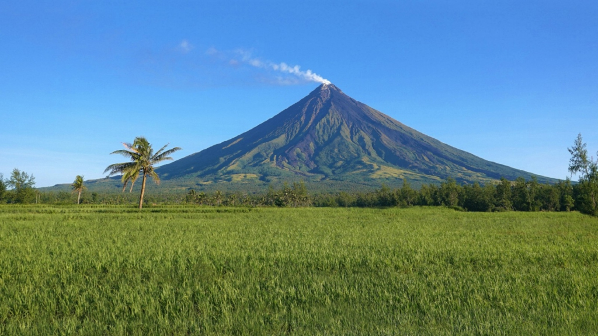

Unveil the Wonders of Albay
Within all of the volcanic eruptions that are located in the Philippines, the Mayon Volcano, or Mount Mayon is the most popular due to its breathtaking cone shape. It’s an amazing perspective that is available for those who participate in Mayon Volcano excursions like the ones offered through Mayon ATV tours. Mayon ATV tour is now the most sought-after activity for travelers visiting the region.
Mayon Volcano is located at an elevation of 2462m. It is located in the province of Albay within the Bicol region to the southwest region of Luzon Island. The volcano is also regarded to be the biggest active volcano in the Philippines with a history of 50 eruptions over the last 10 years.

Mayon Volcano is the highest point in the entire region, specifically within Legazpi City, and offers an incredible backdrop, no matter whether you’re located in Legazpi Province.
The legend claims that the name comes from the word “magayon” which is the Bicolano word for beautiful. This is sufficient to express the stunning natural beauty of the area from all angles.
If you’ve always dreamed of visiting the magnificent Mayon Volcano, here’s a full guide to an exciting excursion to one of the most visited tourist destinations throughout the Philippines.
Best Time to Go
Legazpi City, the most popular tourist destination for visitors up to Mayon Volcano, is best visited during the dry season from March through May. There is a significant amount of rain anticipated from July through September.
There are a few tourist attractions and thrilling activities worth a visit and trying.
Cagsawa Ruins
Cagsawa’s Ruins Tours provide the most famous views of Mayon Volcano that’s why it’s one of the most visited attractions in Legazpi. The church’s ruin remains are part of the fascinating and heartbreaking tales of what was once a popular building during the Spanish time. It was built by Franciscans around the 17th century.
Mayon 4×4 ATV Ride
The most effective way to get closer to this incredible creation is to put on your Explorer helmet (or helmet in this instance) and head toward the base of Mayon Volcano. On an ATV that is 4-wheel-drive Mayon ATV is traverse through forests, rice fields as well as volcanic rocks in a path that leads up to the peak’s Lava Wall.
Mayon Volcano Hike/Trek
You can make your journey more adventurous by climbing to the top of the Mayon Volcano. Find a reputable guide and go on the Farmer’s Trail in which you’ll be amazed by nature at its best. It is thought that the entire path had resulted from volcanic eruptions throughout the years.
Ligñon Hill Nature Park
The 156-meter-high Ligñon Hill has always been one of Legazpi’s most renowned landmarks. For a long time, Ligñon Hill is known just for its PHIVOLCS observatory which is located on its flanks, as well as an ancient lighthouse at its top. It is now one of the city’s top spots for adventurers, sightseers, and even fitness lovers.
For those who love to see, a 360-degree panorama across Legazpi City, Daraga, Albay Gulf, and the Mayon Volcano is available from the view deck.